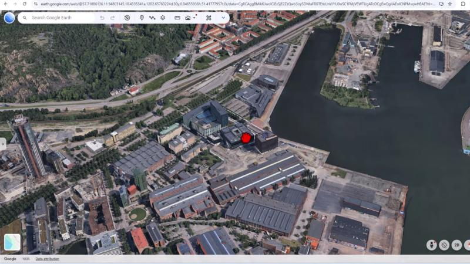
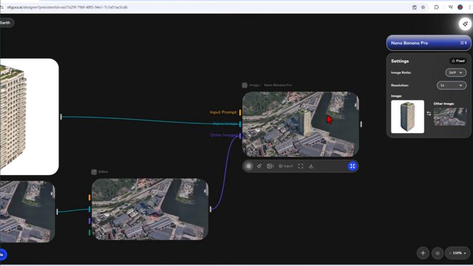
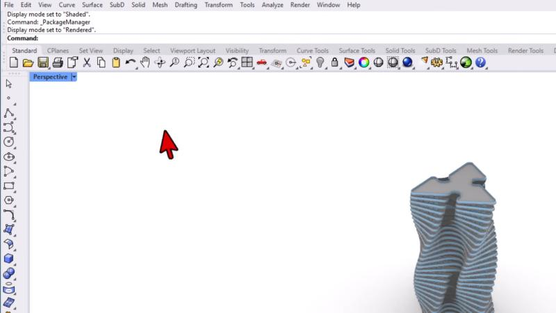
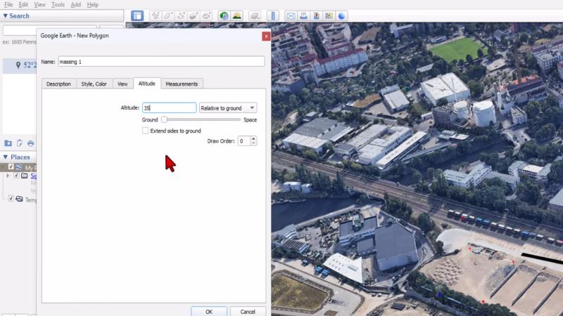
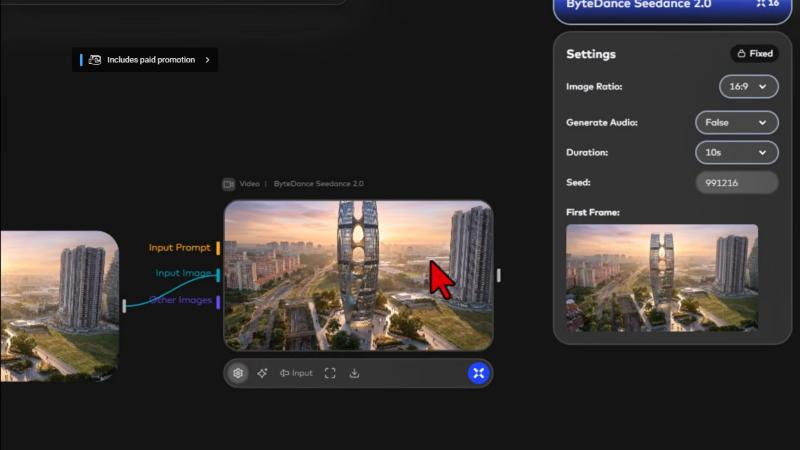

Context is most of the argument in architecture, and it is the thing concept imagery usually fakes. These four workflows put a design into a real location — same site, increasing accuracy, increasing effort — using Google Earth, Rhino and xFigura, a node-based AI canvas built for design work.
Pick the one that matches the stage you are at. The first takes minutes; the last is geolocated to actual coordinates.
How the canvas works
Double-click anywhere to bring up a menu and pick what to create. Generate, drag out from the result, link it to the next node. Every image node has three colour-coded inputs — prompt, input image, other images — so building a chain is a matter of dragging connections.
Two settings catch people out:
- Aspect ratio is per node. If you do not set it, it inherits from the first image.
- Start at low resolution, then upscale the one you keep. Up to 4K is available, and there are upscaling models — generating everything at 4K just burns credits on options you will discard.
Workflow 1 — screenshot, scribble, composite
Generate a top-down view of the building, or bring your own. In Google Earth, turn labels off and use the clean setting, find an angle, screenshot.

Upload the screenshot, drag off it, and open the built-in editor — a simple paint tool. Mark your site in red. This is the single thing that makes positioning work; without it the model guesses.

Connect both images into one image node, set a wide aspect ratio, and write the prompt as a relationship: fit the first image into the red outline of the second, matching scale and perspective. With several images, describe the order and name the important areas.
Rough and ready — and fast enough to be worth doing during a design conversation.
Then iterate in the same canvas. Sketch landscaping over the output in different colours, describe what each colour means — orange for the path, say — and generate. For the presentation version: keep the context and perspective the same, only change the lighting, set resolution to 2×, and you have an evening shot of the same view.
Group and name your nodes as you go. The canvas becomes unreadable otherwise.
Workflow 2 — Rhino plugged into the canvas
Install the plugin from Rhino's package manager: Tools → Package Manager → search xFigura → install → restart. Then type the command in Rhino and the canvas opens inside the Rhino viewport.

What this adds is a screenshot button that captures the current viewport directly into the canvas, and 3D model import. If you are changing the design often, this removes the whole export-and-upload loop. Captures save back to the web app automatically.
For better scale control this time: find a building of similar height next to your site in Google Earth and screenshot that. Circle the whole building in red — you are telling it to replace that building, so it inherits the height. Prompt: replace the outlined building in image two with image one, keep the scale.
The result sits at the right height and picks up the surrounding tone. From there, add detail — green balconies, different angles — and use an edit model with rotation control if you need alternative viewpoints without new source images.
Workflow 3 — draw the massing in Google Earth Pro
More accurate again, and it costs nothing. Google Earth Pro (the desktop app) lets you draw your massing directly onto the map.
Add → Polygon, name it, draw any shape in the 3D view. Then the Altitude tab: set relative to ground, enter your building height, and tick extend sides to ground — miss that one and you get a floating lid instead of a volume.

Screenshot the result and bring it into the canvas with two more image uploaders: a facade reference and a landscape reference. Use the editor to mark where each intervention goes.
Then the long prompt — and it needs to be long. Name each image, say where it sits and how it integrates: this facade onto that massing, this landscaping into that surrounding. The model needs to be told the relationships; it will not infer them.
Generating four options is worth doing. In this run one matched the source perspective and the other three invented different views — the model preferring variation over repetition. Useful, as long as you are expecting it.
Workflow 4 — geolocated, from Rhino to a cinematic
The accurate one. This puts the actual model at the actual coordinates.
In Google Earth Pro, drop a pin on your site and read off the latitude and longitude. In Rhino, pick the point in your model that corresponds to it, type EarthAnchorPoint, and enter those coordinates — copying exactly, back and forth. You will be asked for a base point and a north direction.
Set the viewport to rendered mode before exporting, because the export carries materials. Then export the selection as KMZ.

Open that KMZ in Google Earth Pro and the model appears in the right place, at the right scale, with its materials. Reposition the camera and screenshot the composition.
In the canvas, the prompt is now narrow: improve the quality, materials and lighting of the context, add planting and landscaping, keep the perspective, angle and context the same.
One practical note from this run — the angle shifted slightly. Make your screenshot 16:9 so nothing gets resized on the way in.

Then generate a start frame for a video — a morning-light version, for drama — and add a video node. The main video models are available in place. Set aspect ratio and duration; ten seconds takes considerably longer to render than five. Prompt for a slow camera move around the tower.
Which one to use
| Stage | Workflow | Accuracy |
|---|---|---|
| Early option testing | 1 — screenshot composite | Indicative |
| Active design in Rhino | 2 — plugin + height reference | Good |
| Massing studies, no model yet | 3 — Earth Pro polygon | Measured massing |
| Client presentation, film | 4 — KMZ at coordinates | Geolocated |
The thing worth internalising is that all four depend on the same two habits: mark the site in colour, and describe the relationship between images rather than the image you want. Everything else is settings.